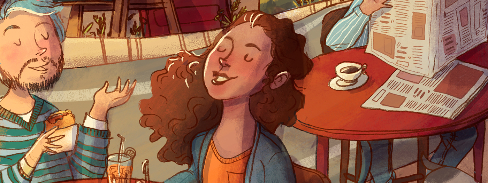

Savannahs college
I tried to recover the awesome feeling that I had while I was doing the “Bella’s Cafe” project - because it had characters based on people and elements that I love. So, in this time I thought about Savannah, this beautiful city, with charming cafes, boutiques, cute dogs and etc. The main characters are again based on my friends, the ones that I had the opportunity to share this amazing experience that was, living abroad.
Next project
